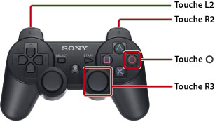

Comment utiliser ce mode d'emploi
Ce mode d'emploi contient des informations détaillées relatives à l'utilisation du logiciel système PS3™. Pour plus d'informations sur les fonctions matérielles et la sécurité du produit, reportez-vous à la documentation fournie avec le système.
Notes sur l'affichage du mode d'emploi
Il est recommandé d'afficher le mode d'emploi dans les conditions suivantes :
- Activez JavaScript dans votre navigateur. Si JavaScript est désactivé pour le navigateur que vous utilisez, le mode d'emploi risque de ne pas s'afficher correctement ou de ne pas s'afficher.
- Lors de l'affichage du mode d'emploi sur un ordinateur, utilisez Microsoft Internet Explorer 6.0 ou ultérieur.
Parcourir le mode d'emploi à l'aide du système PS3™
Utilisez les fonctions de base ci-dessous pour afficher le mode d'emploi depuis le  (Navigateur Internet) du système PS3™.
(Navigateur Internet) du système PS3™.
| Touches de navigation | Pour déplacer le pointeur vers un lien. |
|---|---|
Touche  |
Pour ouvrir le lien. |
| Joystick droit | Pour faire défiler dans toutes les directions. |
| Touche L1 | Pour revenir à la page précédente. |
Vous pouvez utiliser la méthode suivante pour agrandir l'affichage.

| Appuyer sur la touche R3 (joystick droit) | Utiliser l'affichage avec zoom. / Supprimer l'affichage avec zoom. |
|---|---|
| Maintenir les touches L2 / R2 enfoncées | Agrandir l'affichage. / Réduire l'affichage. |
Maintenir la touche  enfoncée pendant le zoom enfoncée pendant le zoom |
Supprimer l'affichage avec zoom. |
Explication des références aux touches dans le mode d'emploi
Les touches du système PS3™ utilisées pour saisir et annuler des éléments varient en fonction de la région et du produit. Il est convenu que les versions en anglais et dans les autres langues européennes de ce mode d'emploi utilisent pour saisir un élément et pour l'annuler, alors que les versions dans les autres langues utilisent pour saisir et pour annuler.
Impression de ce mode d'emploi
Vous pouvez imprimer le mode d'emploi à l'aide d'un ordinateur. En vous conformant aux étapes ci-dessous, vous pouvez imprimer plusieurs pages simultanément.
1. |
Utilisez Microsoft Windows Internet Explorer pour afficher l'[Index manuel] de ce mode d'emploi. |
|---|---|
2. |
Depuis le menu Fichier de Internet Explorer, sélectionnez [Imprimer]. |
3. |
Sélectionnez l'onglet [Options], puis activez la case à cocher en regard de [Imprimer tous les documents associés] pour imprimer le mode d'emploi. |